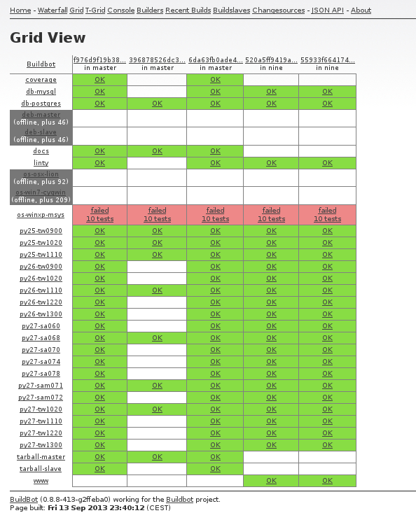
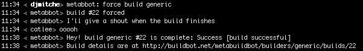
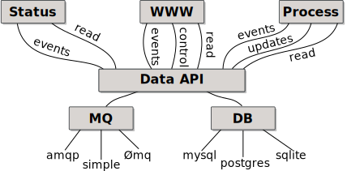

Buildbot
The Continuous Integration Framework
Dustin J. Mitchell
Mozilla

Outline
-
What is Buildbot?
- What does it do?
- What is it used for?
- How does it work?
-
Development Challenges
- Converting from Sync to Async
- Building a Generic Data API
- Testing: Lessons Learned
- Synchronizing State and Events
What is Buildbot?
Buildbot is a
framework
for automating
build,
test, and
release
processes.
Overview

Generating Jobs
Executing Jobs
Reporting Status
Reporting Status
Buildbot Development
"Nine":
Ongoing work on a major refactor that will become Buildbot-0.9.0
Buildbot Nine Goals
- Efficient, scalable operation
- Well-defined APIs for users to build on
- All state stored in a database
- Real-time updates as builds proceed
- Modern, fast web interface using a popular JS framework
- Pluggable backends to suit different use-cases
- Support for distributed masters with no loss in functionality
- Maximum compatibility for existing users
Buildbot Nine Design
Converting Sync to Async
def getBoatNamesSync():
result = dbapi.execute('SELECT name from boats') # BLOCKS
return json.dumps([ r.name for r in result ])
def getBoatNamesAsync():
d = txdbapi.execute('SELECT name from boats')
def toJson(result):
return json.dumps([ r.name for r in result ])
d.addCallback(toJson)
return d # returns immediately, with result coming later
from twisted.internet import defer
@defer.inlineCallbacks
def getBoatNamesAsync():
result = yield txdbapi.execute('SELECT name from boats')
defer.returnValue(json.dumps([ r.name for r in result ]))
#
def createSummary(self, log):
# ..
if self.hasSyntaxError:
self.addCompleteLog("syntax-error",
"".join(summaries['misc']))
else:
for m in self.MESSAGES:
if counts[m]:
self.descriptionDone.append("%s=%d" % (m, counts[m]))
self.addCompleteLog(m, "".join(summaries[m]))
self.setProperty("pyfl-%s" % m, counts[m], "pyfl")
self.setProperty("pyflakes-total", sum(counts.values()),
"pyflakes")
@defer.inlineCallbacks
def createSummary(self, log):
# ..
if self.hasSyntaxError:
yield self.addCompleteLog("syntax-error",
"".join(summaries['misc']))
else:
for m in self.MESSAGES:
if counts[m]:
self.descriptionDone.append("%s=%d" % (m, counts[m]))
yield self.addCompleteLog(m, "".join(summaries[m]))
yield self.setProperty("pyfl-%s" % m, counts[m], "pyfl")
yield self.setProperty("pyflakes-total", sum(counts.values()),
"pyflakes")
cons
- Public API change
- Subtle errors on mismatch
- Huge diffs for the refactor
- Operations are no longer atomic
pros
- "everything is async" is easy to remember
- @inlineCallbacks means syntax is similar
Generic Data API
{ "masters": [
{
"active": true,
"last_active": 1379629099,
"link": "http://euclid.r.igoro.us:8010/api/v2/master/1",
"masterid": 1,
"name": "euclid.r.igoro.us:/A/bbrun"
}
],
"meta": {
}
}
{
u"active": True,
u"last_active": 1379629099,
u"link": Link((u'master', 1)),
u"masterid": 1,
u"name": u"euclid.r.igoro.us:/A/bbrun"
}
HTTP:
- http://foo.com/api/v1/build/8493
- http://foo.com/api/v1/builder/13/build/190
Python:
yield self.master.data.get(('build', 8493))
yield self.master.data.get(('builder', 13, 'build', 190))
{ "builders": [
{
"builderid": 1,
"name": "builder"
},
{
"builderid": 3,
"name": "builder2"
}
],
"meta": {
"total": 2
}
}
[
{
"builderid": 1,
"name": "builder"
},
{
"builderid": 3,
"name": "builder2"
}
]
# http://foo.com/api/v1/build/8493/step?number__lt=2
yield self.master.data.get('build', 8493, 'step',
filters=[Filter('number', 'lt', 2)])
# http://foo.com/api/v1/build/8493/step?limit=3&offset=6
yield self.master.data.get('build', 8493, 'step',
limit=3, offset=6)
class BuildsetEndpoint(base.Endpoint):
isCollection = False
pathPatterns = "/buildset/n:bsid"
def get(self, resultSpec, kwargs): # ...
class BuildsetsEndpoint(base.Endpoint):
isCollection = True
pathPatterns = "/buildset"
def get(self, resultSpec, kwargs): # ...
class Buildset(base.ResourceType):
name = "buildset"
plural = "buildsets"
endpoints = [ BuildsetEndpoint, BuildsetsEndpoint ]
keyFields = [ 'bsid' ]
class EntityType(types.Entity):
bsid = types.Integer()
submitted_at = types.Integer()
complete = types.Boolean()
results = types.NoneOk(types.Integer())
entityType = EntityType(name)
- HTTP code translates URL arguments to a ResultSpec instance using type metadata
- Data API code hands the ResultSpec to Endpoing get method, which can apply
parts of it via custom DB API calls:
def get(self, resultSpec, kwargs): complete = resultSpec.popBooleanFilter('complete') d = self.master.db.buildsets.getBuildsets(complete=complete) # ... - Data API code applies any remaining pieces of ResultSpec in Python
{ "builds": [
// ...
],
"meta": {
"total": 160,
"links": [
{ "href": "http://euclid.r.igoro.us:8010/api/v2/build?offset=140&limit=20",
"rel": "self" },
{ "href": "http://euclid.r.igoro.us:8010/api/v2/build?limit=20",
"rel": "first" },
{ "href": "http://euclid.r.igoro.us:8010/api/v2/build?offset=120&limit=20",
"rel": "prev" }
],
}
}
>>> blds = yield self.master.get(('build'), offset=140)
>>> print blds.total
160
>>> print blds.offset
140
>>> print blds[0]['id']
141
Summary
Data API is core to Buildbot
Data API is language-agnostic
Data API is generic, with room for optimizations
Testing - Lessons Learned
Untested code is bad, but
bad tests are worse
Coverage isn't everything.
Use fakes and mocks sparingly,
and test them.
from buildbot.test.util import interfaces
class Tests(interfaces.InterfaceTests):
def test_getBuild(self):
# ...
class RealTests(Tests):
def test_addBuild_existing_race(self):
# ...
class TestFakeDB(unittest.TestCase, Tests):
def setUp(self): # ... set up the fake DB
class TestRealDB(unittest.TestCase, RealTests):
def setUp(self): # ... set up a real DB
class Tests(interfaces.InterfaceTests):
def test_signature_getBuild(self):
@self.assertArgSpecMatches(self.db.builds.getBuild)
def getBuild(self, buildid):
pass
Unit testing is good,
but know when to say when
Don't merge un-tested patches
Testing - Lessons Learned
Summary
Synchronizing State and Events

https://en.wikipedia.org/wiki/File:Vector_Clock.svg
Buildbot's approach
Compromise
- State is not recoverable from events
- All events contain the entire entity
- Logfile updates contain only the new logfile length
Future Ideas
Band-Aids
- Include a short (10s?) history cache in the MQ layer
- Implement vector clocks between MQ and DB layers
Fixes
- Implement a distributed database? PAXOS? 2PC? WAL?
- Find a library that addresses this issue?
Am I the only one?
Buildbot
The Continuous Integration Framework
Dustin J. Mitchell
dustin@mozilla.com
http://buildbot.net
slides at https://github.com/buildbot/buildbot-media
license: CC-SA